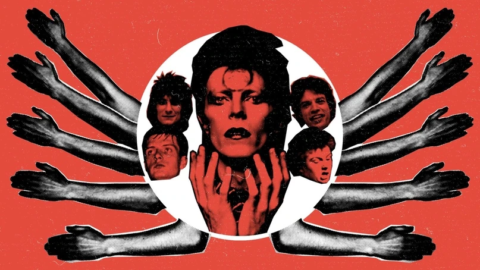
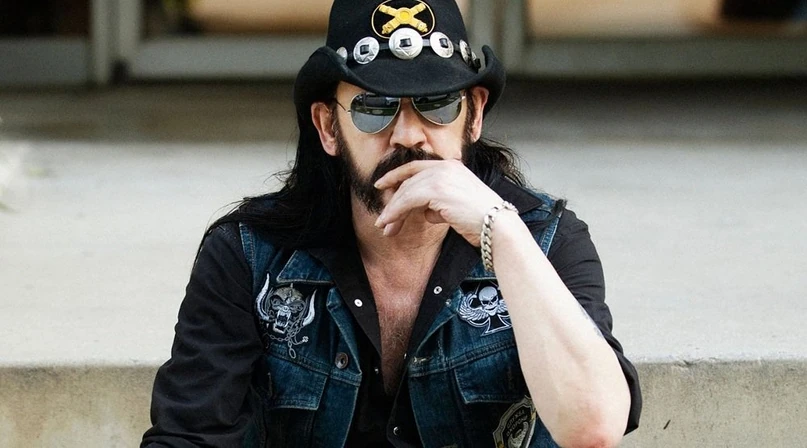
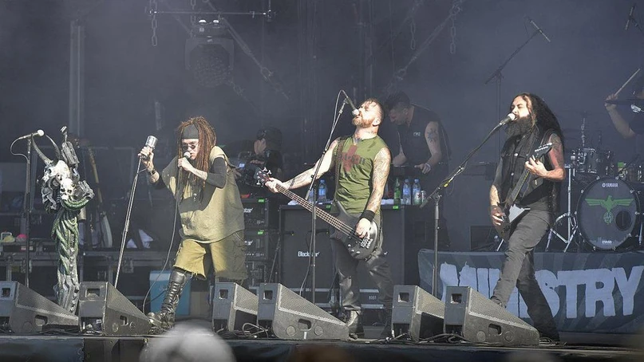
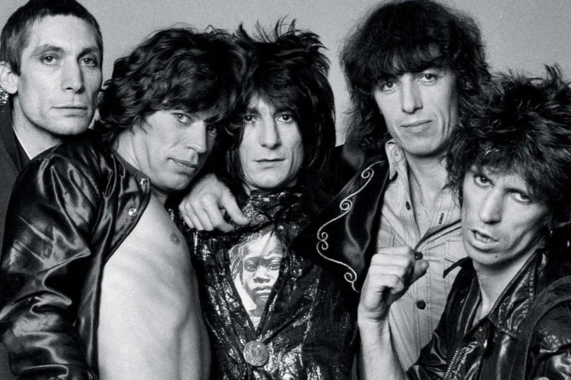

Данила Блюз — о музыкантах, которые были были не прочь пококетничать с нацизмом

K-pop-коллектив южнокорейских пупсов BTS обвинили в пропаганде нацизма. Что ждет несчастных азиатов, насмехающихся над бомбежкой Хиросимы и Нагасаки и делающих селфи на фоне мемориала памяти жертв холокоста? Итак, открываем большую книгу истории позорищ рок-н-ролла и смотрим, кто еще из музыкантов чесал пузико зверю мирового фашизма и что им потом за это было.
На днях южнокорейский бойз-бэнд BTS обвинили в симпатиях к нацистам и разжигании ненависти. Один из участников группы Чимин явился на японское шоу Music Station в футболке, на которой был изображен ядерный взрыв и написан лозунг, посвященный освобождению Кореи от японского правления. Шоу сняли с эфира, а СМИ, блогеры и оскорбленная общественность, как пираньи, накинулись на сладких корейских мальчиков, требуя от них покаяния. BTS извинились, но лишь за сорванное шоу. Комментировать свое отношение к нацизму и ядерной бомбардировке Японии они не стали. Кадырова на них нет.
Если вы сейчас качаете головой и цокаете языком, мол, вот времена настали, раньше такого не было, молодежь чтила подвиг дедов, то получите леща по плешивой старой башке. Нацизм хоть и был побежден, но все же войну за стиль он безоговорочно выиграл. Эстетически гитлеровский нацизм шикарен, круче разве что Римская империя. Черная униформа от Hugo Boss, черепа, мегакрутая свастика в белом круге на красном фоне — это пугает и завораживает одновременно. Ну и как мимо такого богатого наследия могли пройти охочие до дешевого шика музыканты? Раз в несколько лет какой-нибудь музыкант нет-нет да и напялит на себя эсэсовскую фуражку и китель да запоет что-то вроде «Зайка моя». Давайте посмотрим, кто еще из музыкантов был не прочь пококетничать с нацизмом.
Sex Pistols
Одни из многочисленных отцов панк-рока, британцы Sex Pistols из кожи вон лезли, чтобы шокировать старшее поколение. Популярным и действенным способом была, да и остается, нацистская символика. Говорят, знаменитая футболка Сида Вишеса со свастикой была у него еще до вступления в группу, он щеголял в ней по улицам Лондона, которые только оправились от немецких бомбежек. Позже продюсер группы Малькольм Макларен (еврей по национальности) начнет продавать в магазине, который они держали с Вивьен Вествуд, нарукавные повязки со свастикой. Продавались они хорошо — юные панки шли на все, чтобы побесить предков.

А еще чуть позже «Пистолеты» выпустят ироничную песенку о концлагере Берген-Бельзен под названием Belsen Was a Gas. Спустя много лет Джонни Роттен признается, что это он автор этой злой и глупой песни:
«Это была очень мерзкая, тупая вещица, которая должна была закончить свои дни на полу в монтажной».
Siouxsie and the Banshees
Стоит отметить, что панков частенько колотили за нарукавку со свастикой. Так, например, продавец того самого магазина Sex, что держал Макларен, был жестоко избит в Ноттинг-Хилле, когда решил потроллить местное население модным аксессуаром.

Однако это не пугало еще одних британских тогда еще панков, а позже постпанков и готик-рокеров — Siouxsie and the Banshees, чья солистка Сьюзи Сью часто появлялась на сцене и фото со свастоном на предплечье. Ясное дело, никакой идеологии за этим не стояло. Вот как Сьюзи объясняет спустя много лет свое поведение:
«Это была противопредковая движуха. Нас тошнило от старперов, которые с самодовольной гордостью говорили о Гитлере: «Мы показали ему!» Это был классный способ вывести их из себя, смотреть, как они краснеют от злости».
Joy Division
Joy Division — («дивизия удовольствий», «дивизия развлечений») название отсылает к отделу нацистских концлагерей, где женщин использовали в качестве секс-рабынь, если верить бульварному роману «Кукольный дом». На обложке первого EP группы — An Ideal For Living — красовался барабанщик в форме гитлерюгенда, а внутри был изображен нацистский автоматчик, целящийся в ребенка с поднятыми руками.

По словам лидера группы Йена Кертиса, все эти картинки должны были заставить зрителя задуматься. В принципе, сейчас посыл группы предельно ясен — все это отражало протест против растущей политики авторитаризма в Британии времен Тетчер. Но, увы, наци-скины были не очень сильны в иронии и считали Joy Division за своих.
Лемми Килмистер
Бедолагу Лемми всю жизнь обвиняли в нацизме за его любовь к железным крестам и эсэсовским фуражкам. Дом его напоминал святилище нацизма: стены увешаны знаменами, железными орлами, автоматами, пистолетам, трофейными ножами, кортиками и саблями, гардероб был забит нацистской формой, а гараж — немецкими авто времен войны.

Но Лемми был всего-навсего заядлым коллекционером, а никаким не нацистом. «Я собираю вещи, а не идеи», — сказал он в одном интервью. В другом — был более многословен: «Я не виноват, что плохие парни делают лучшее на свете дерьмо! Собирая свою коллекцию, я не делаюсь фашистом или скинхедом. Мне просто нравится их шмотье. И мое увлечение разделяют не какие-то отщепенцы — это все университетские профессора, доктора наук. Мне всегда нравилась красивая военная форма, и что поделать, если у плохих парней она лучше всех. Возьмите кого угодно: Наполеона, конфедератов, нацистов... Выпускайся в Британии что-нибудь путное — я бы это тоже коллекционировал. Но что придумали у нас? Цвет хаки, который делает солдат похожими на лягушек».
Rammstein
Немецких индастриал-секс-киборгов Rammstein неоднократно обвиняли в пропаганде фашизма. Обвинения в основном сыпались от самих немцев, в остальном мире к выходкам группы относились более-менее спокойно. На это лидер группы Тилль Линдеманн отвечал, что у Германии выработался комплекс в связи с определенной частью истории и теперь, если какая-то группа слишком маскулинна или «слишком немецкая», у людей возникают ассоциации с нацизмом.
Главный спор разгорелся вокруг использования группой в своем клипе кадров из пропагандистского фильма времен Третьего рейха — «Олимпии» Лени Рифеншталь. Линдеманн говорил, что это всего лишь дань уважения выдающемуся шедевру кинематографа. Снисходительные немцы рокеров простили, но впредь попросили быть их менее двусмысленными.

Славой Жижек в своем «Киногиде извращенца» вступился за Rammstein и назвал их чуть ли не главными низвергателями фашистской идеологии:
«Тот минимум фашизма, который используют Rammstein, оказывается чистой символикой полового влечения. Наслаждение должно быть концентрированно передано минимумом знаков, чаще жестами, которые не имеют идеологического наполнения. Что делают Rammstein? Они освобождают эти элементы от значения, вложенного в них фашистами. Это позволяет нам наслаждаться ими в их доидеологическом состоянии. Один из способов преодоления нацизма — это наслаждение этими элементами, какими бы абсурдными они ни казались без придания им нацистского значения. Таким образом мы подрываем нацизм изнутри».
Ministry
Еще одни монстры индастриала Ministry также получили свою порцию обвинений в нацизме, когда решили показать быт обычного наци-скинхеда в клипе Stigmata. После выхода клипа на концерты зачастили скины, которые приветственно зиговали группе.

«А песня ведь на самом деле антифашистская, она про то, что нельзя бессмысленно следовать чужим идеям, — жаловался журналистам лидер группы Эл Йоргенсен. — Нам приходилось прыгать со сцены и натурально драться с зигующими, чтобы прекратить все эти слухи».
The Beatles
Даже пацифисты и хиппаны Beatles не смогли избежать очарования нацизма. Для обложки альбома Sgt. Pepper's Lonely Hearts Club Band каждый участник группы должен был выбрать несколько исторических личностей, которые якобы присутствуют на воображаемом концерте. Рохля Ринго, кстати, уступил свое право выбора другим битлам. Так вот хохмач Леннон среди гостей вписал Иисуса Христа, Ганди и Гитлера. После скандала с фразой, что «Битлз популярнее Иисуса», Сына Божьего было решено убрать с обложки. Ганди попал на фото, но был закрашен, а вот Гитлер — он там есть, только стоит за спинами музыкантов. Художник Питер Блейк рассказал об этом журналистам, а также предоставил фото со съемочной площадки, где мы можем видеть фигуру Гитлера среди прочих.

Еще одна история случилась на заре творчества «Битлов». До своей супервселенской популярности четверка выступала в Гамбурге в качестве кабацких лабухов. Публика в барах не всегда была приветлива, пьяные бюргеры грубили и вели себя по-свински — в ответ Леннон вставал и делал старый добрый зиг-хайль. Тогда их чудом не избили.
The Rolling Stones
В 60-е еще молодые «Роллинги» тоже баловались нацизмом помаленьку. Джаггер выступал в футболке со свастикой, а Кит Ричардс любил заявиться на светскую вечеринку в полном обмундировании офицера вермахта. Но всех переплюнул основатель группы и один из членов «Клуба 27» Брайан Джонс. В 1966 году он выступил продюсером, автором саундтрека и актером в немецком авангардном фильме Mord und Totschlag. Перед показом он дал интервью и устроил фотосессию одному немецкому изданию, где со своей подружкой Анитой Палленберг предстал в нацистской форме. В прессе Джонса сожрали с потрохами.

«Вы чего, люди, — оправдывался Джонс, — я думал, что мои длинные патлы и нацистская форма настолько не сочетаются, что всем будет понятно, что это прикол». Но с некоторыми вещами, как оказалось, лучше не шутить.
Дэвид Боуи
Звездный мальчик Дэвид, голубо-сероглазый блондин, как будто сошедший с фашистской агитки про расовую чистоту, конечно, тоже не избежал влияния нацизма. В 1970-е Боуи страдал от кокаиновой зависимости, что вылилось в некоторую форму психоза. В итоге Изможденный Белый Герцог — образ, который на тот момент примерял на себя музыкант, — начал признаваться в прессе в симпатиях к Адольфу Гитлеру:

«Британия готова к фашистскому лидеру... Я думаю, Британия только выиграет, если ею начнет управлять фашист. В конце концов, фашизм — это форма национализма... Я очень сильно верю в фашизм, люди всегда более эффективны при диктаторских режимах... Адольф Гитлер был первой рок-звездой... Нам нужно, чтобы крайне правый фронт поднялся и сбил всех с ног, а потом подчистил все».
Как бы подкрепляя свои слова делом, Боуи по возвращении в Лондон в 1976 году приветствовал своих поклонников жестом, очень сильно напоминающим зигу. Само собой, Боуи все отрицал и говорил, что не зиговал толпе, но в свете его интервью по-другому этот жест истолковать было нельзя.
Но есть в этой истории и плюсы. Околофашистские закидоны Боуи стали главным катализатором для запуска кампании «Рок против расизма».